Becoming friends with your camera
Project 0 is about one idea that is easy to mix up. Zoom changes how much of the world fits in the frame, but it does not change perspective. Perspective is set by where the camera sits, the center of projection. I shot the three required experiments on an iPhone 17 Pro Max to make that difference visible.
Part 1
Selfie: the wrong way vs. the right way
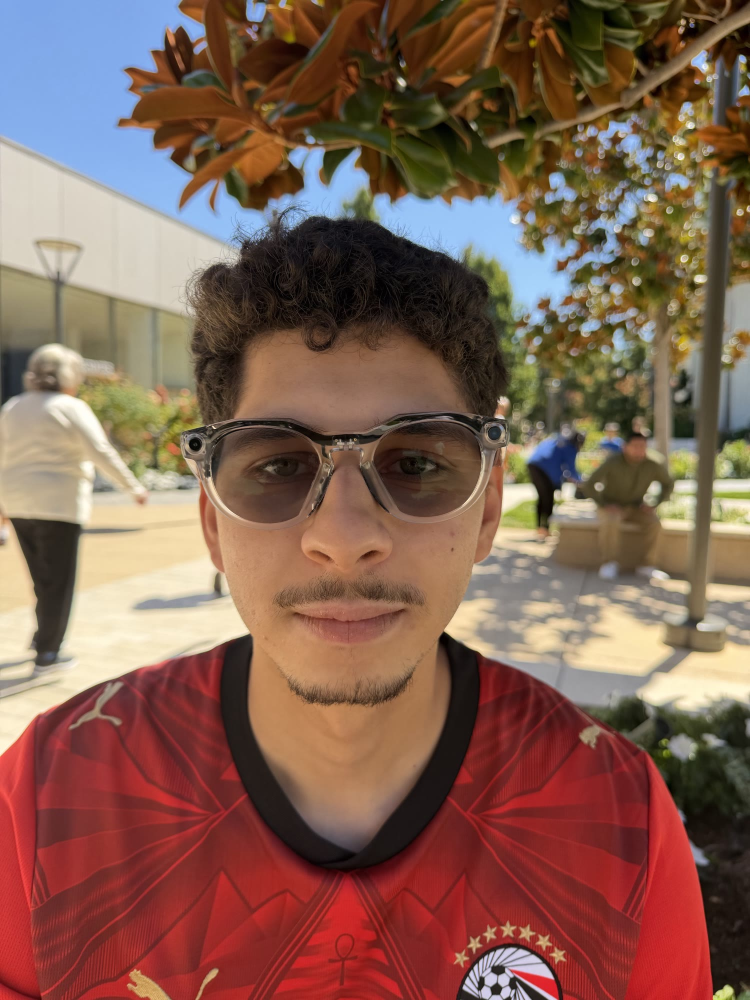
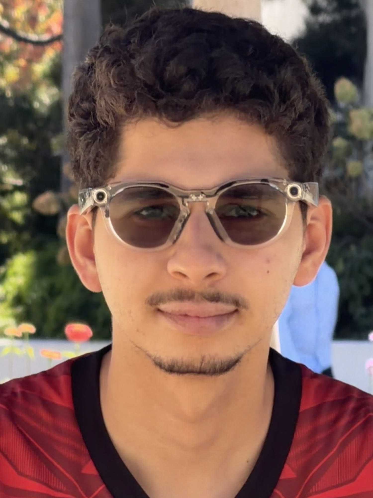
I took the first photo from arm’s length at 24mm, then walked back several yards and zoomed to 385mm so my face filled about the same amount of the frame. The close one is the typical selfie: a little stretched, with more campus behind me. The second looks closer to how people actually see a face.
What changed is the distance, not the zoom. When the camera is close, my nose is much nearer to the lens than my ears or the sides of my head, so the nearer features take up more of the picture. From several yards back, those depth differences are tiny compared with the distance to the camera, so the face stays in proportion. The long zoom only crops that distant view; it does not move the center of projection.
Part 2
Architectural perspective compression
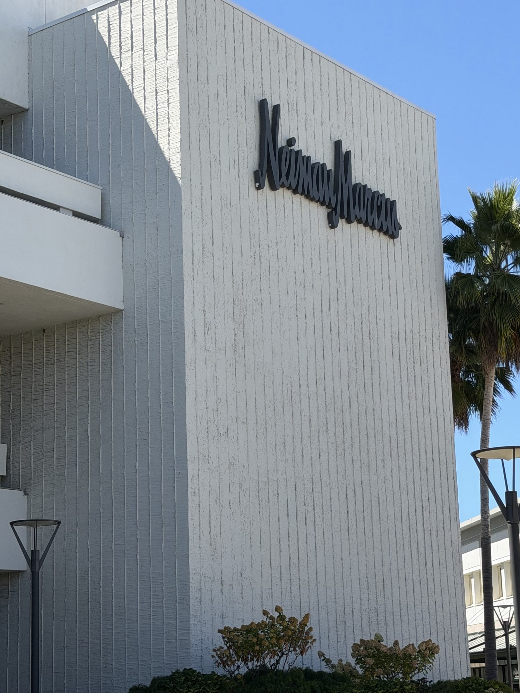
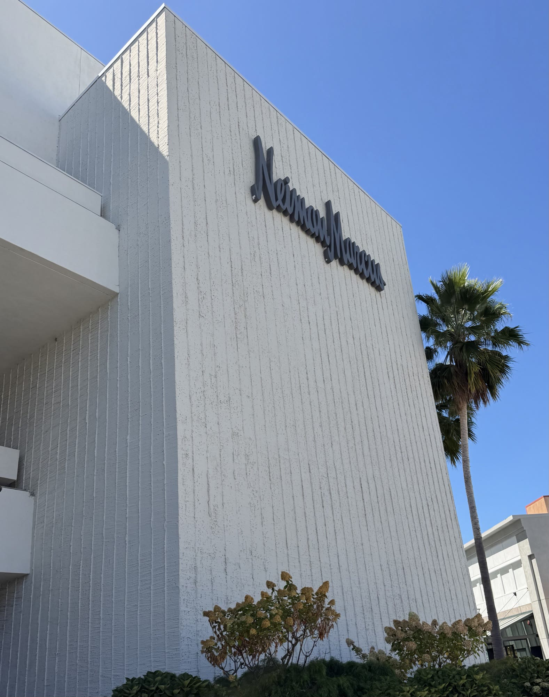
I ran the same experiment in reverse on the Neiman Marcus facade, shot slightly off axis so the corner and the palm sit at different depths. First I stood back and zoomed to 72mm. Then I walked toward the wall and shot at 24mm, keeping the sign and the ribbed face about the same size.
The far shot looks flatter. From that viewpoint the palm, the bushes, the wall, and the sky are all a long way from the camera, so their relative sizes barely differ. Walking in moves the center of projection: the nearby plants and the lamp grow, and the wall starts to lean and recede. It is the same building and the same sign with different geometry, and the only thing that changed the perspective was where I stood.
Part 3
The dolly zoom
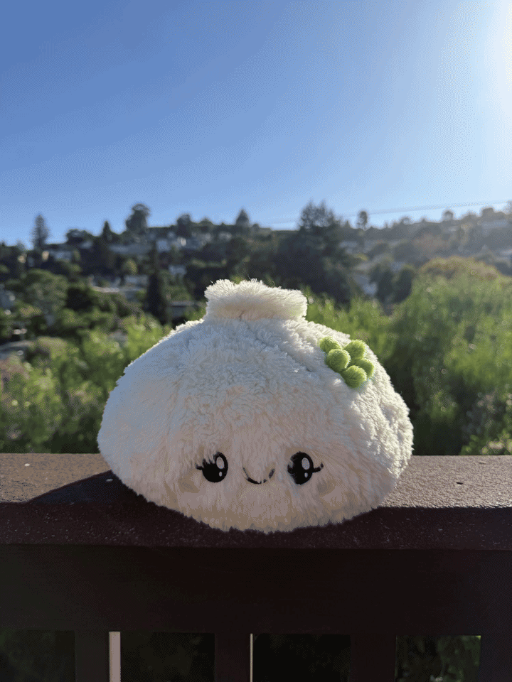
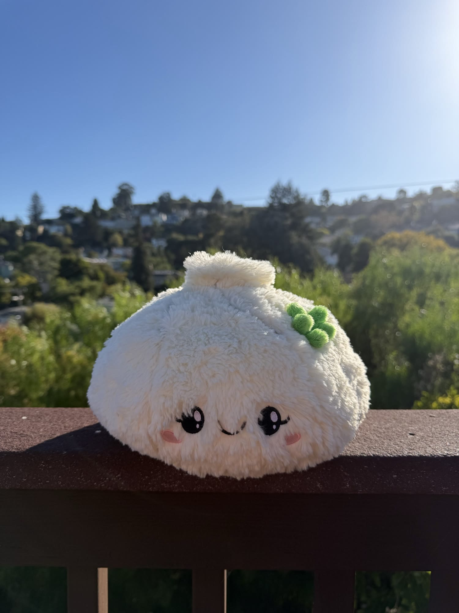
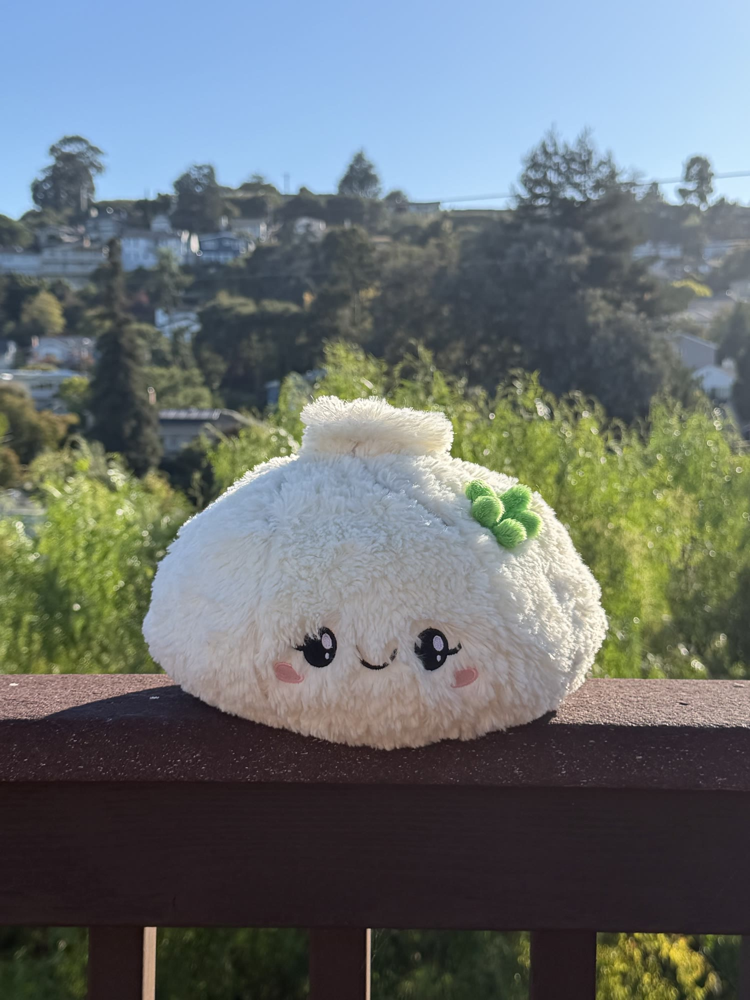
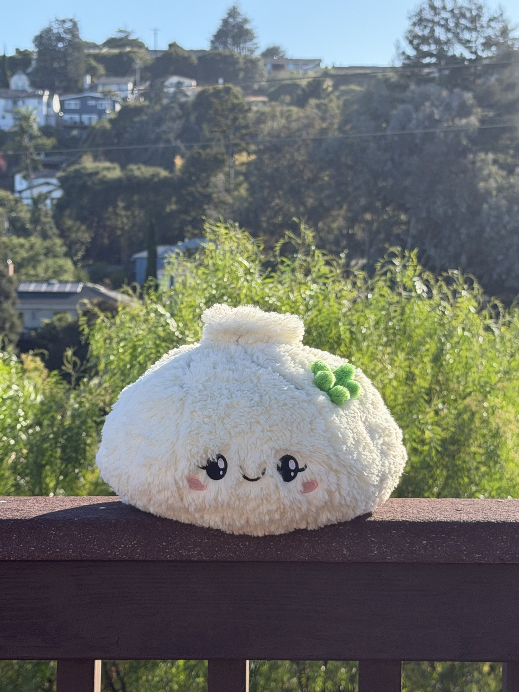
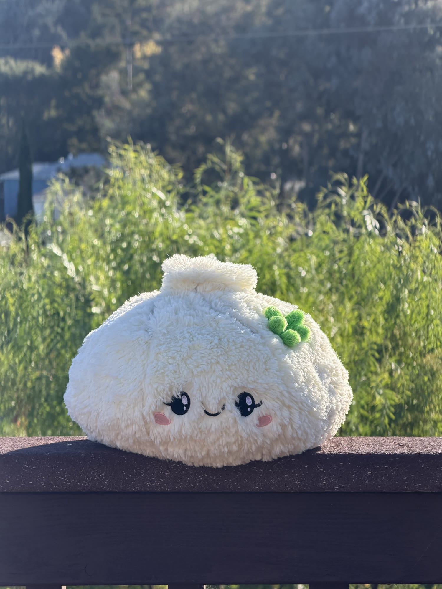
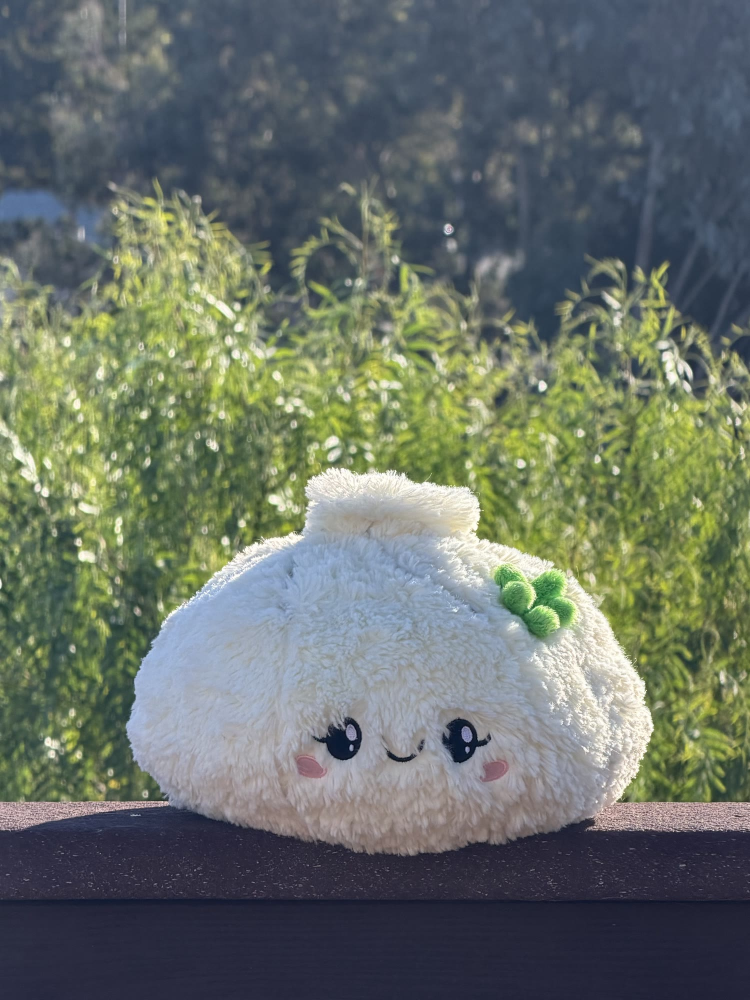
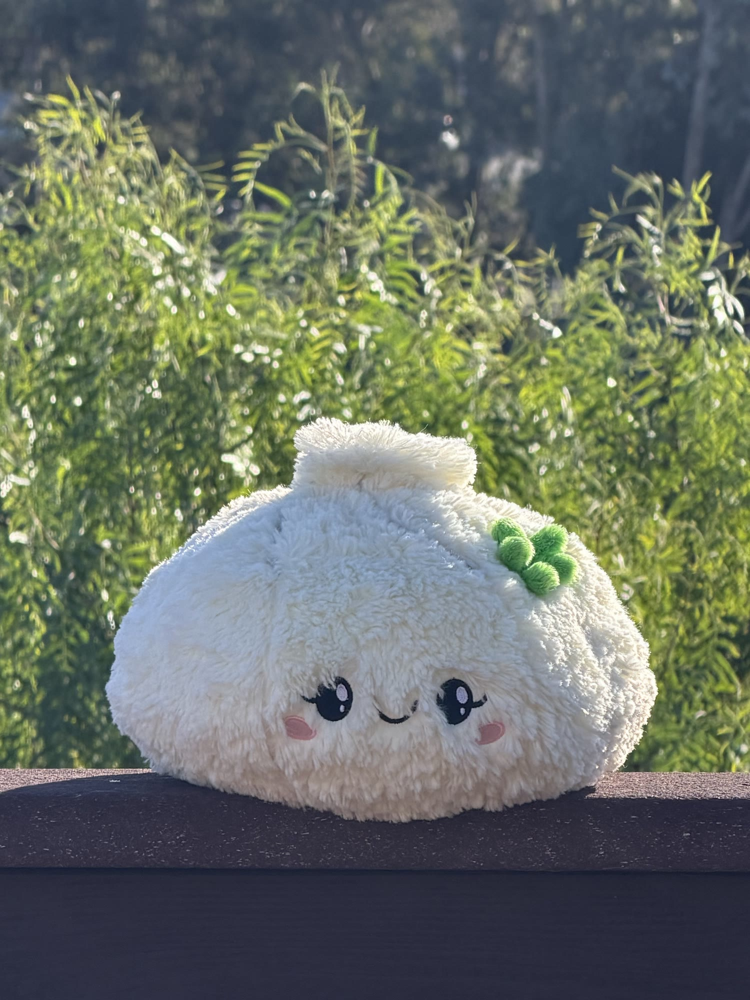
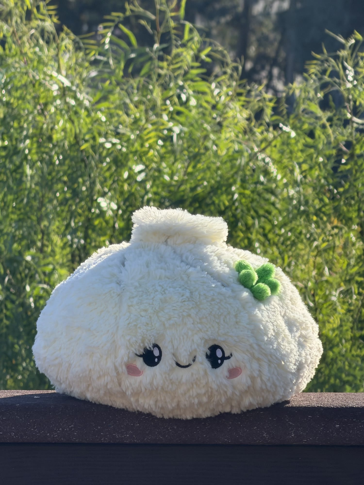
This is the Vertigo shot: move the camera back while zooming in so the subject stays roughly the same size. I used a bao plush on a balcony rail, since it is small and has a deep background behind it, and took seven stills from 24mm to 240mm, then stitched them into a looping GIF.
The trick works because image size and perspective are controlled by different things. Size depends on focal length divided by distance, while perspective depends only on distance. Changing both at once holds the bao still in the frame while the hillside, the houses, and the sky collapse into a wall of trees. It is the same relationship as the selfie and the building, just animated.